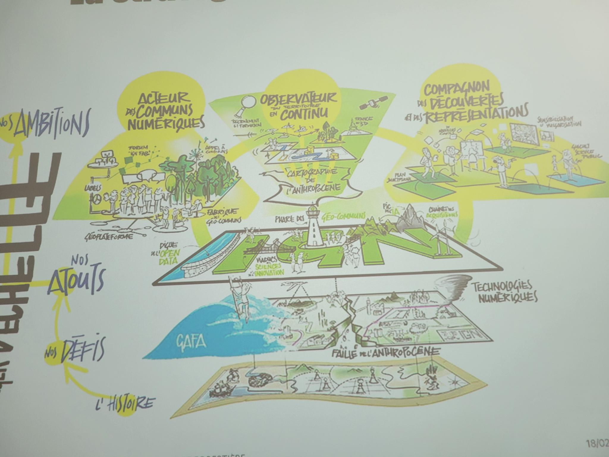

Présentation de Philippe Abadie

Délégué Régional

Passage au numérique en 40 ans, 1986 début de la BD Topo numérique.
ENSG -> Geoata Paris
Un institut en très forte transformation
-
Données génériques -> Données thématiques métiers
-
Données statiques -> Données dynamiques et de simulation
-
Données Payantes -> Données ouvertes et gratuites (80% de subvention + 20 % issues des autres ministères)
Sans IA pas de cartes
COSIA et COS GE : https://geoservices.ign.fr/cosia
CARHAB
LIDAR HD
GEO K PHYTO
BD FORET
BD HAIE
Les défis
- La donnée géo est partout
- La connaissance du territoire est indispensable
- La cartographique publique doit devenir un instrument d'émancipation => L'anthropocène lance un nouveau défi à la cartographie
La stratégie en dessin

L'offre 3D par prise de vue aérienne
- Des nuages de points
- Des modèles numériques de terrain
- Courbes de niveaux
Des produits : - BD ALTI - RGE ALTI - LIDAR - France Relief MNT
[!IMPORTANT]
On aura la présentation, je voulais jste écrire en Markdown
Géoplateforme et Cartes.gouv.fr
S'inscrire !
Modèle économique financé par les "gros"
Géolateforme => services
Data.gouv => catalogue de données